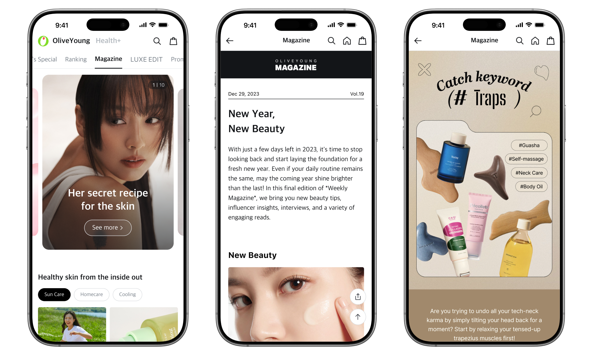
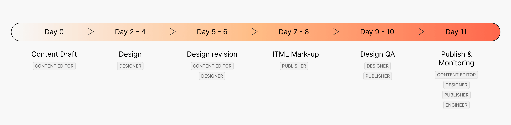
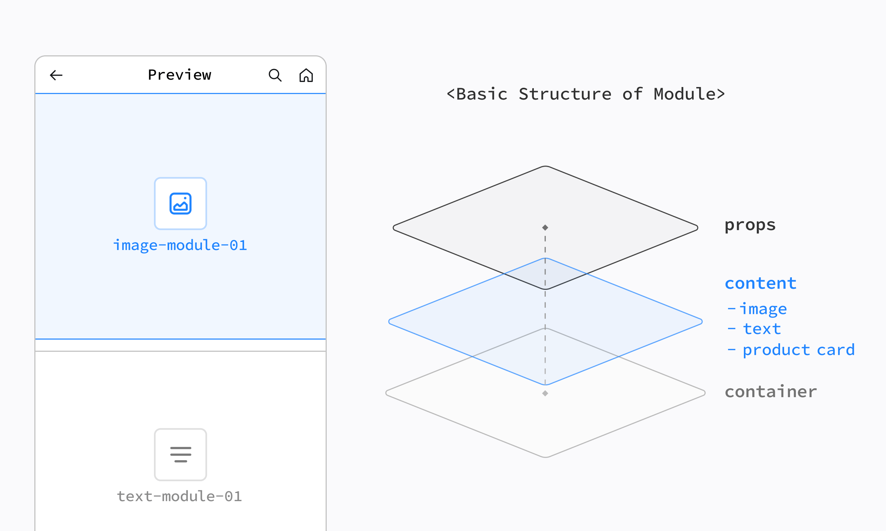
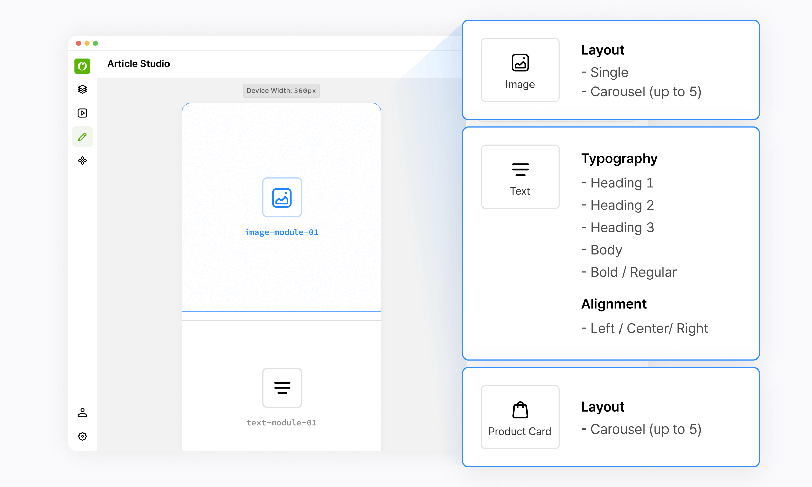
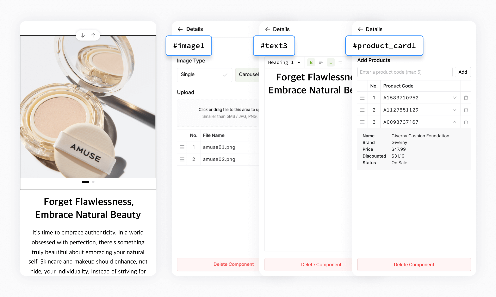
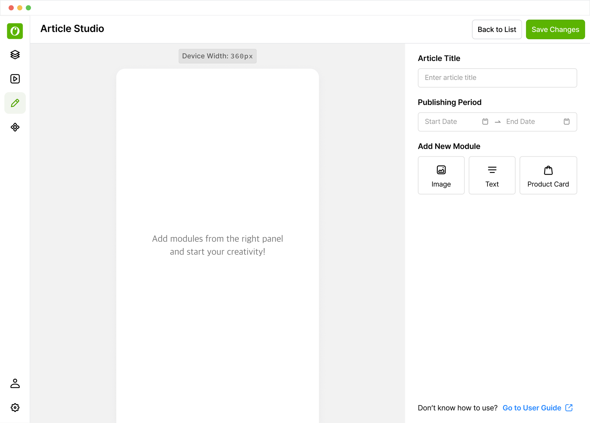
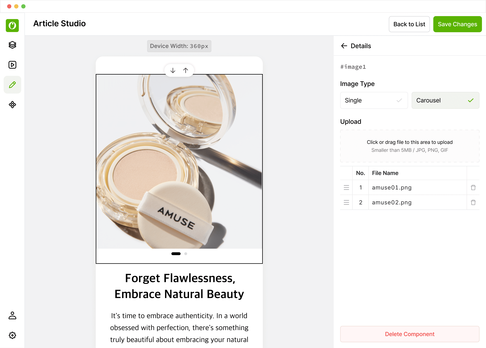
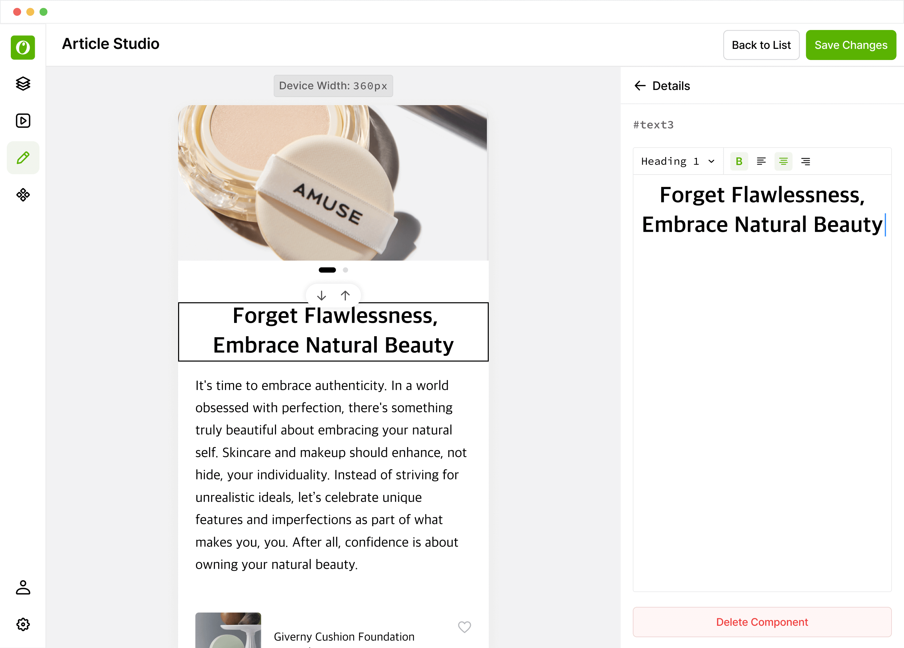
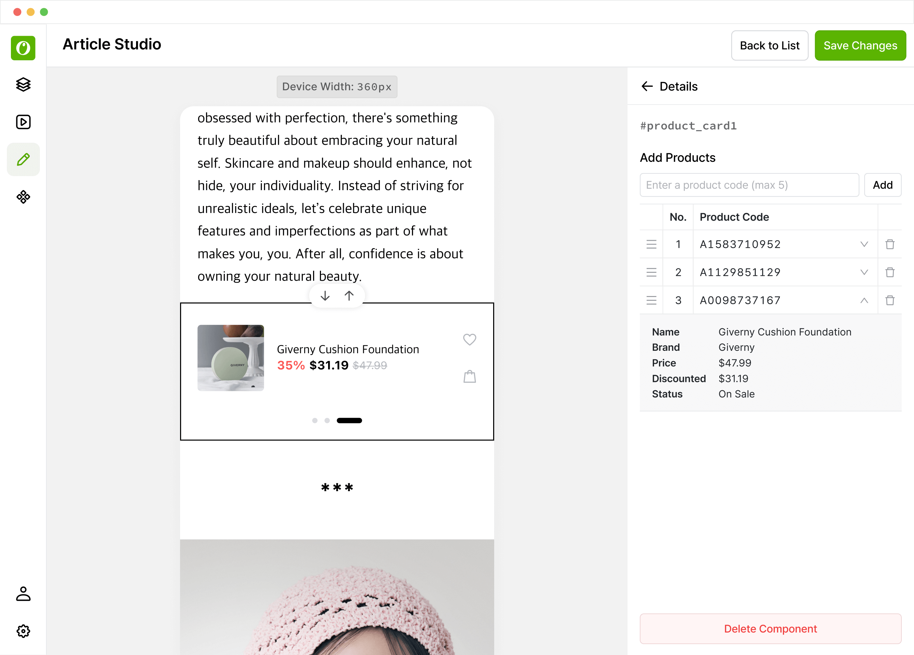

Business Cost
Missed sales and marketing opportunities
- 01
Slower response to trends
- 02
Less timely, relevant content
- 03
Lower engagement potential

Contributions
Context
Olive Young’s online mall used magazine content to deepen customer engagement and create new sales and marketing opportunities beyond product listings.

Problem

Why It Mattered
Business Cost
Missed sales and marketing opportunities
Slower response to trends
Less timely, relevant content
Lower engagement potential
Operational Cost
Scaling required more manpower
High dependency on supporting teams
Frequent ad-hoc requests for supporting teams
Repeated production costs
Affected teams

Content Editors
PrimaryEditors depended on designers and publishers to turn their drafts into published articles.
Designers & Publishers
Frequent ad-hoc requests kept bringing designers and publishers back into the production process.
Hypothesis

Reduce the need for design and development support while keeping articles consistent.

Make creating and editing content straightforward for non-technical editors.

Help editors respond to trends without waiting through a long production cycle.
Goal

Product Strategy
The hypothesis: reusable blocks would help editors assemble articles faster and publish more often without design or development support.

The hypothesis: shared editing controls and design assets would help maintain consistent quality across articles.

The hypothesis: a clear, self-explanatory interface would reduce training time and day-to-day effort for non-technical editors.

Success Metrics
1. Production Speed
Time needed to create and publish one article
2. Publishing Volume
Average number of articles published per month
3. Independence
Number of articles published without help from other teams
Final Solution
Editors set up an article, add image, text, and product modules, and preview how the content will look on mobile before publishing.
Make the story your own.Edit a sample article and see your changes instantly.
Try live prototype



Result
Article production time fell from two weeks to 20 minutes. Monthly publishing volume and the number of articles published independently also increased.
20 min
Time per article2 weeks
162.5%
Average monthly
publishing volume
62.8%
Independently
published articles
Reflection
Challenge
The team faced pressure to finish within a month and prioritize speed over usability because this was an internal tool.
Learning
I learned to make the value of usability clear to stakeholders. Sharing our vision and discussing concerns helped build support for a tool that editors could use independently.